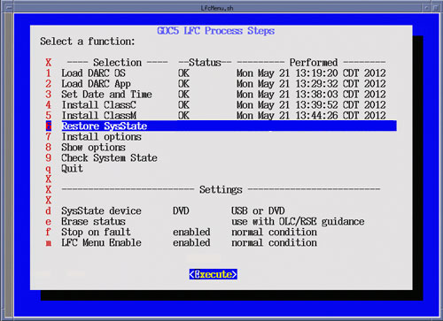

Insert the System State Media in either the DVD-RAM Drive of USB Port depending on media chosen earlier in this procedure, then select [Execute].
A shell window will open and the System State will be restored. Several pop-ups will appear requesting configurations settings based on Options being restored. Select appropriate settings for the Options.
Upon completion of the Restore System State, a pop-up will appear reminding that a reboot will be required. Click [OK], but do not reboot at this time. Close the shell window to return to the LFC Menu.
| NOTE: | When this menu selection is chosen, the System State Save
and Restore Utility will be launched. See (12HW14.6) VCT GOC5 System State Save Restore procedure in the Software Installation section of the Software Chapter
in the Service Documentation for more details. If previously installed, all Options will be restored during the Restore System State. Remember to set LFC Menu Settings (Selection “d”) to USB if using USB Media. LFC Menu is defaulted to DVD-RAM. |
Illustration 28: LFC Menu - Restore System State Selection
